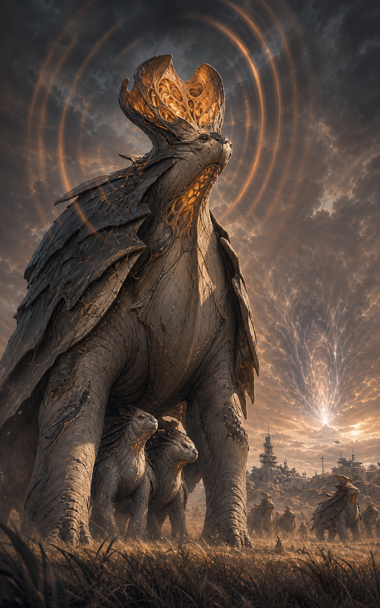

XENOBIOLOGY ARCHIVE · 2460
它们沿恒星风迁徙，在废弃静域中完成一生，也在人类的货运港、戴森环与裂隙边缘留下自己的生态秩序。
受星能与时间环境影响，但仍以摄食、繁殖、迁徙和群体行为维持生态。
晶灵与兽裔包含大量子型。本页只记录共同原则，不以单一形象覆盖整个族群。
星云体与空亡体并非普通生物，但会以稳定形态和行为介入现实，故纳入边界档案。
选择记录，查看识别特征、生活习性、栖息环境及与文明的关系。
档案修订：2460-RIFT / 生物记录仍在扩充